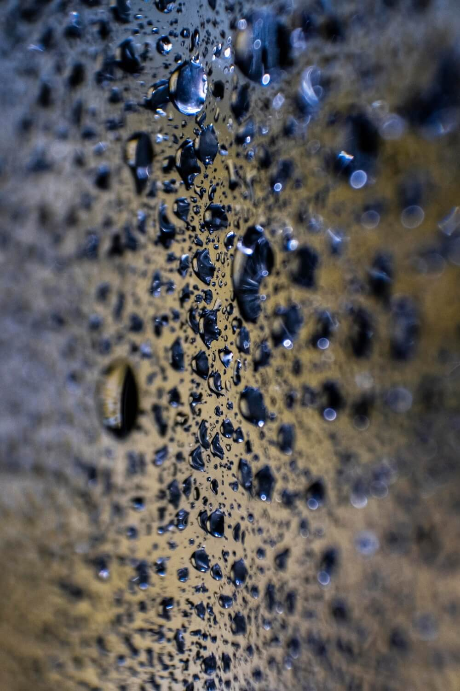
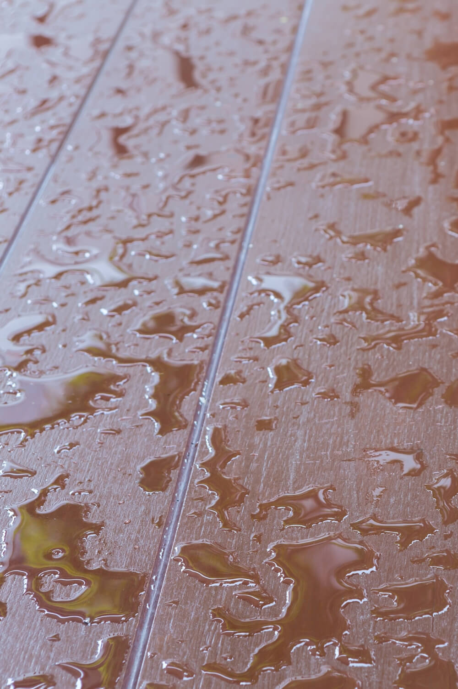

Dlouhodobá ochrana proti vlhkosti
Impregnační ochrana vytváří neviditelnou bariéru proti vlhkosti, usazování nečistot a opětovnému růstu mechu či plísní.
Samotné čištění je jen první krok. Aby výsledek vydržel co nejdéle, nabízíme profesionální impregnaci povrchů.
Poptat impregnaci
Impregnační ochrana vytváří neviditelnou bariéru proti vlhkosti, usazování nečistot a opětovnému růstu mechu či plísní.


Ve většině případů ne. Používáme vlastní vysokozdvižné plošiny nebo horolezeckou techniku (slaňování), což šetří váš čas i náklady na stavbu lešení.
Ano, technologie pracuje s regulovaným tlakem a teplotou vody. Odstraní nečistoty, řasy i plísně hloubkově, ale bez rizika poškození povrchu nebo zateplovacího systému.
Kvalitní impregnace vytvoří neviditelnou bariéru, která funguje 5 až 10 let v závislosti na typu povrchu a okolním prostředí.
Ano, po důkladném očištění a odmaštění provádíme profesionální nátěry plechových střech barvami s vysokou odolností proti povětrnostním vlivům.
Samozřejmě. V rámci čištění střechy se postaráme i o vyčištění a zprůchodnění okapů, aby voda správně odtékala.
Ano, specializujeme se na odstraňování graffiti z jakéhokoliv povrchu (cihla, beton, omítka) bez poškození podkladu.
Kontaktujte nás pro nezávaznou kalkulace impregnace. Cenovou nabídku zpracováváme do 24 hodin.
Chci cenovou nabídku